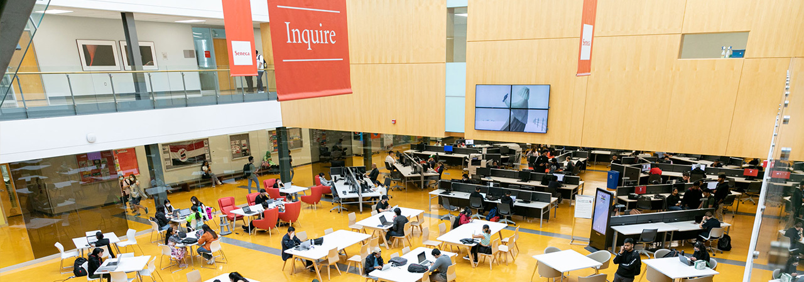

Welcome to My Website
Hello and welcome to my personal website. I'm a passionate web developer. Let me tell you more about me.
| Education | Major | Institute |
|---|---|---|
| Bachelors in Software development | Web Development | Seneca College |
| Electromechanical Engineering | Thermodynamics | Sheridan College |
| Secondary Education | Science Stream | GSHSE Board |
Currently, I am pursuing my Bachelors in Software Development from a very highly reputed institute in Ontario
Let's take a tour of my institute.
This is the place where intelligent thoughts came and at Seneca dreams come true.
There are more than hundred of different programs available at seneca college in all the fields. Find your interest and give a boost to your professional career with Seneca.
My work experience
- Farmbro
- Make 2D and 3D design according to client requirments.
- Provide them with a sample piece for quality checks and size requirements.
- GFS
- Maintaine the warehouse equipments
- order and repair the heavy warehouse equipments and batteries.